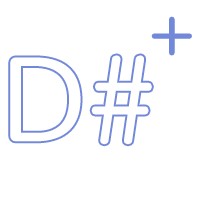
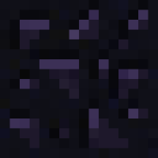

Listed here are open-source projects I have worked on, and am proud of.
 DSharpPlus
DSharpPlus is a .NET Standard library for making bots using the Discord API.
It started of as a continuation of DiscordSharp, but has since become much better than it's predecessor.
ModCore
ModCore is a powerful moderation bot for Discord.
Originally developed for my personal server, it has since gone public and is currently serving over 150 discord servers.
 Obsidian
Obsidian is a minecraft server fully written from scratch, trying to replicate what the official minecraft server does, but more efficiently in C#.
foo_discord
Foo_discord is a foobar2000 addon adding Discord rich presence support. It is my first popular C++ project.
CHANdler
CHANdler is an image board software written using ASP.NET Core MVC. It takes a lot of inspiration from sites like 4CHAN.
CRISP-8
CRISP-8 is a CHIP-8 emulator written as a learning and passion project.
It's written in C#, with .NET Standard so platform-specific renderer and sound implementations are possible.
Rizumu
Rizumu is my first full game. It's a rhythm game inspired by games like Osu!, Taiko and DDR. Rizumu was written in C# on top of MonoGame.
BGEngine
BGEngine is an app similar to Wallpaper Engine allowing a user to configure live wallpaper content.
The GitHub repository has since been archived since I simply bought Wallpaper Engine myself. I do consider this to be a very fun project, though.
 foo_discord
foo_discord